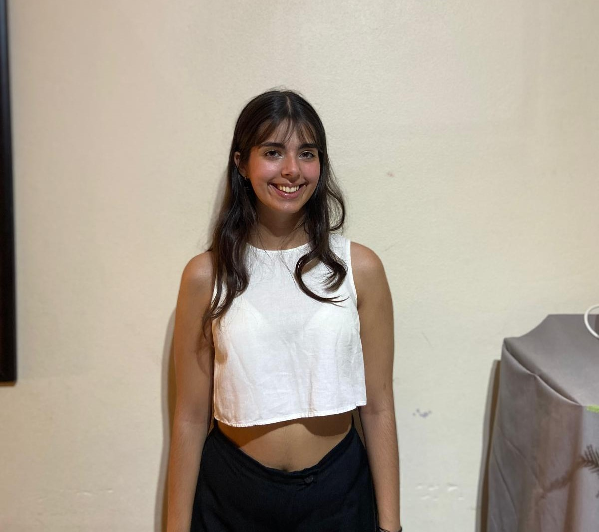
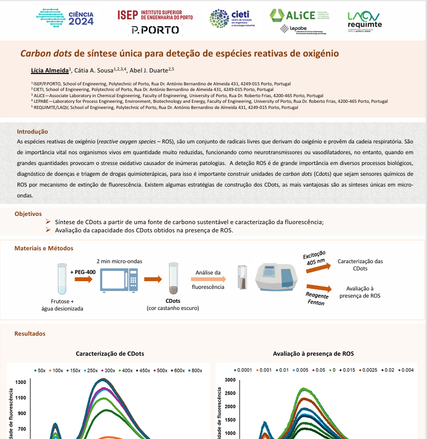

Estudante de Mestrado e licenciada em Engenharia Biomédica pelo Instituto Superior de Engenharia do Porto (ISEP).
Apaixonada por tecnologia aplicada à saúde e pelo desenvolvimento de soluções biomédicas inovadoras, com experiência académica em programação, processamento de sinal biomédico, sensores biomédicos, análise de dados e inteligência artificial. Particular interesse na aplicação da tecnologia para impulsionar a inovação na área da saúde e melhorar sistemas médicos.

Exposição do póster "Carbon Dots sensor for ROS detection" no Encontro Ciência 2024.

Ver póster completo (PT)Python · R · C/C++ · Java · JavaScript · Node.js · SQL · Arduino · Nanoparticles · EDC/NHS · Fluorescence Spectroscopy
Vogal do Núcleo de Estudantes de Engenharia Biomédica (2024 - atualmente)
Participação em atividades da associação CASA, nomeadamente, trabalho voluntário em Restaurantes Solidários, na zona Norte (2021 - atualmente)
Docente em MyExplicolandia Online (2024 - 2025)
Participação nas 5ª, 6ª, 7ª e 8ª edições das Jornadas de Engenharia Biomédica no Instituto Superior de Engenharia do Porto (2021-2025)
Participação nos III e IV CHANGE - Chasing Equality, na Faculdade de Medicina da Universidade do Porto (2024-2025)
Vogal na associação Rotaract Club da Universidade do Porto (2023 - 2024)
XVII, XVIII e XIX Encontro Nacional de Estudantes de Engenharia Biomédica (2022-2024)